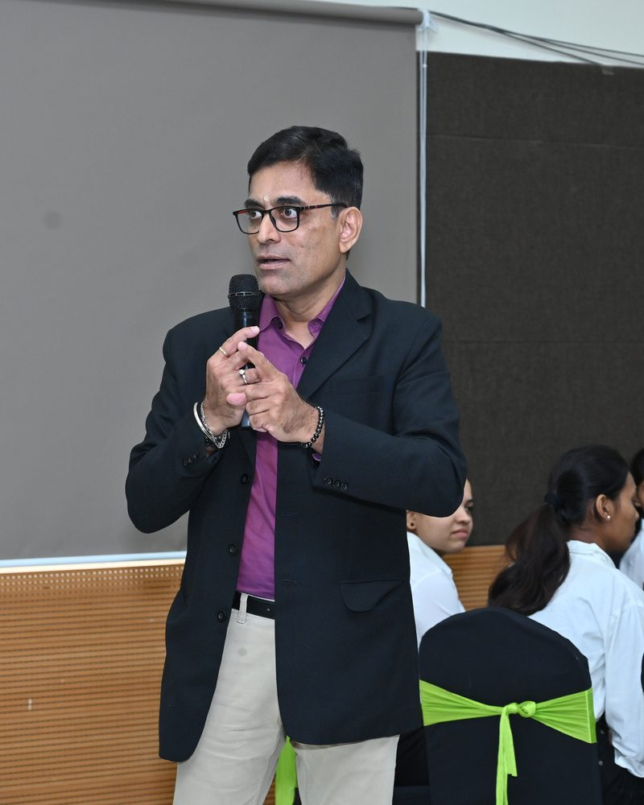
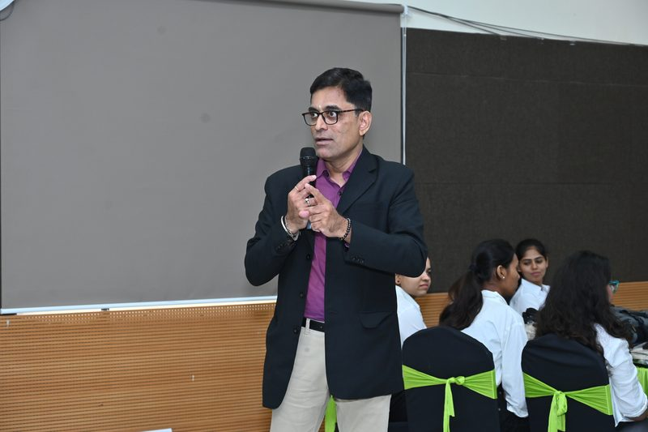
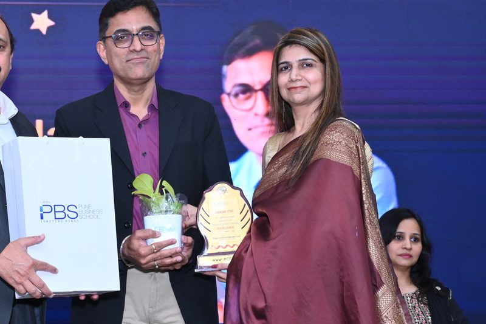
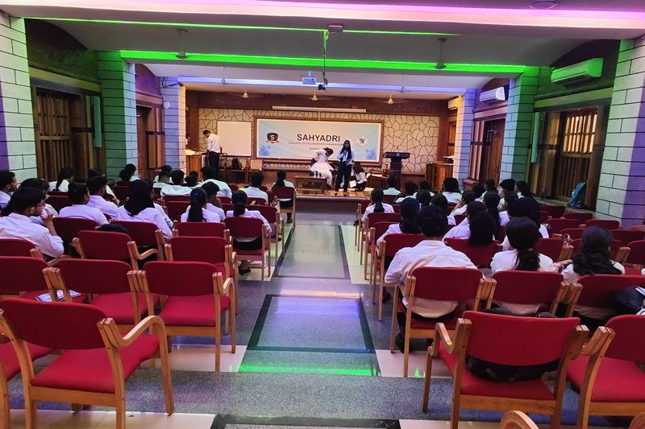
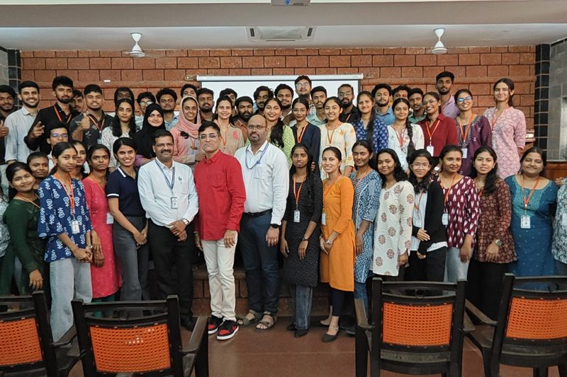
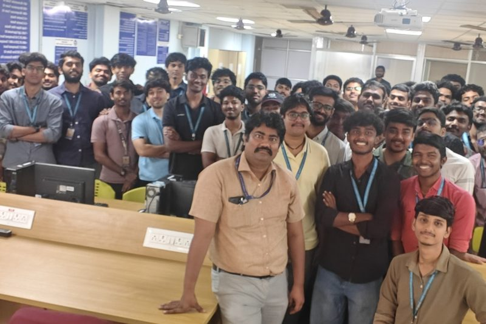
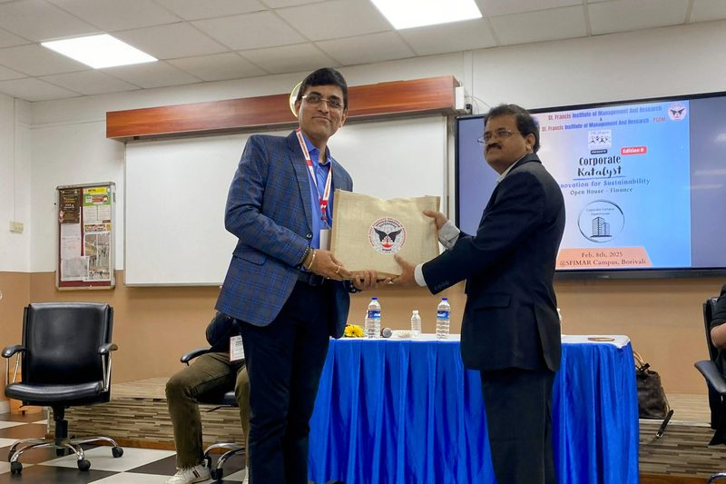

Srikanth Kalyanasundaram, M.IOD
Bridging the shop floor and the boardroom: over two decades of HR leadership, turning technical talent into confident professionals.

A personal path through the transition.
Srikanth began his career not in the boardroom, but on the factory shop floor. After completing a Diploma in Mechanical Engineering (Sandwich) from Coimbatore Institute of Technology (1986 to 1990), he worked hands-on at Kirloskar Pneumatics as Service-In-Charge, erecting and commissioning large air compressors in the field.
This early technical experience gave him a deep, practical understanding of engineering environments and workplace realities. In 1998, he made a strategic pivot into Human Resources with Owens Corning India, managing recruitment, compliance, and payroll. To back this transition with academic rigor, he earned a Post Graduate Diploma in HR Management from Welingkar Institute, Mumbai (2006 to 2008) while working full-time.
Since 2008, Srikanth has served at John Cockerill (most recently as Deputy General Manager of Human Resources), leading large-scale digital systems implementation (SAP SuccessFactors and HCM), executive compensation benchmarking, performance management frameworks, and flagship onboarding programmes.
Over Two Decades of HR Leadership
A timeline showing his transition from engineering field roles to executive corporate leadership.
Deputy General Manager, Human Resources
John Cockerill, Mumbai
Rising to lead strategic HR digitalization (SAP SuccessFactors and HCM implementations), Mercer compensation benchmarking, 9-box talent performance frameworks, PULSE engagement initiatives, and the flagship "Aarambh" group onboarding programme.
Officer, Human Resources
Owens Corning India
Managed full-lifecycle talent acquisition, payroll administration, performance management systems, and compliance audits for ISO 9001, 14000, and 18000 integrated management standards.
Service-In-Charge
Kirloskar Pneumatics
A hands-on technical field role managing the erection and commissioning of industrial air compressors, handling annual maintenance contracts, and driving spare-parts support operations.
Working Intellectual Property
Repeatable, brandable frameworks built and delivered to campuses and corporate teams.
Mindful Professional 360°
A comprehensive, twelve-week campus transition program built around six core pillars: professional excellence, career readiness, leadership presence, emotional intelligence, mindfulness, and boardroom simulations.
CTRL + ALT + TRANSFORM
A structured session built to bridge the gap between classroom confidence and corporate presence, guiding students to control their mindset, alter their approach to challenges, and transform their potential.
Synergy Odyssey
An immersive, three-hour experiential session for postgraduate students. Blends real-world storytelling, focused mindfulness, and blindfold team challenges to build communication, collaboration, and trust.
Aarambh Onboarding Programme
A full-day corporate onboarding initiative designed and implemented at John Cockerill. Directly connects new hires with executive leaders, establishing culture alignment and accelerating time-to-productivity.
Delivered to campuses and industry circuits.
Srikanth is an active speaker and facilitator, regularly invited to evaluate innovation and bridge the gap between academia and organisation readiness.
Recent Campus Invites:
- SRM Institute of Science and Technology (Campus-to-Corporate talk for Mechatronics students)
- Pune Business School (PGDM induction and CTRL + ALT + TRANSFORM master class)
- ATLAS SkillTech University (Freshers' Aspirations vs Organisation Readiness roundtable)
- MIT Academy of Engineering & MIT Alandi (Hackathon jury member)
Selected Roundtables and Conferences
- WORLD HRD Congress
- SHRM Tech Conference
- World HR Summit (Bengaluru)
- Indo-Belgian-Luxembourg Chamber
- HR Shapers Panels & Forums
- uKnowva CHRO Roundtables
In the room.
Photographs from recent campus sessions and institutional engagements.






Professional Recognitions
Certifications
- Member, Institute of Directors (M.IOD)
- ESG Leadership Certification (Institute of Directors)
- POSH Compliance Certification (Indian Society for Training and Development - ISTD)
- Happiness Coaching Certification (Berkeley Institute of Well Being)
- Mindfulness Coaching Certification (Happiitude)
- Train the Trainer Certification (NSDC and MEPSC)
- Business Storytelling Certification (NIST)
- Building Leadership Resilience & Employer Branding credentials
Selected Awards
- HR Leadership Award 2025 (World HR Summit, Bengaluru)
- Iconic HR Leadership Award
- Top HR Innovator Award
- International Achievers Award for Best Leadership Mentor
- Special Chairman's Award 2021 (exemplary service during COVID-19 response)
- Annual Recognitions for Health, Safety, and Employee Well-Being
- Recognition and honors from The Laureate Assembly
Regular insights on people and culture.
Srikanth writes regularly on LinkedIn, sharing real-world experiences from leadership transit, travel, and his daily practice as a mindfulness practitioner.
“Your first KPI in the office is not Key Performance Indicator. It is Kindness, Presence, and Influence. The way you enter the workplace sets the emotional climate for your team.”
Themes & Reflections
People Skills Series: Structured advice on professional presence, active listening, character-building, and simple actions like gratitude in the workplace.
Mindful Leadership: Pausing to refill leadership energy, self-regulation, empathy, and avoiding burnout in high-performance environments.
Campus Readiness: Actionable steps for engineering and management students preparing for interviews and their first 90 days on the job.
Based in Mumbai, delivering pan-India.
Capable of facilitating high-impact sessions in multiple regional languages, supporting regional student cohorts across India.
Location
Mumbai, India
Languages
Tamil · Hindi · Malayalam · Marathi
Connect to discuss corporate training, campus pilots, or coaching.
Arrange a brief consultation to discuss how Srikanth's programmes can align with your institutional or team outcomes.